A/C - System Flushing Information
87 12 05September 7, 2012
2019947 Supersedes T.B. V871002 dated August 11, 2010 to include additional models, model years and update labor operation.
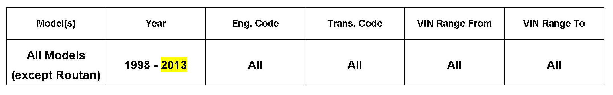
Vehicle Information
Condition
Air Conditioning, Cleaning of the Refrigerant Circuit (U.S. Only)
Debris can be dispersed throughout the refrigerant circuit after a/c component damage. In order to maintain A/C operating efficiency, it is important to flush the refrigerant circuit after A/C component repairs.
Technical Background
In cases where an air conditioning system component (such as a compressor or other system component) has failed and debris from the compressor or component is circulated throughout the refrigerant circuit, the refrigerant circuit must be cleaned of any and all debris or damage to the replacement components will result.
Production Solution
No production change required.
Service
Tools
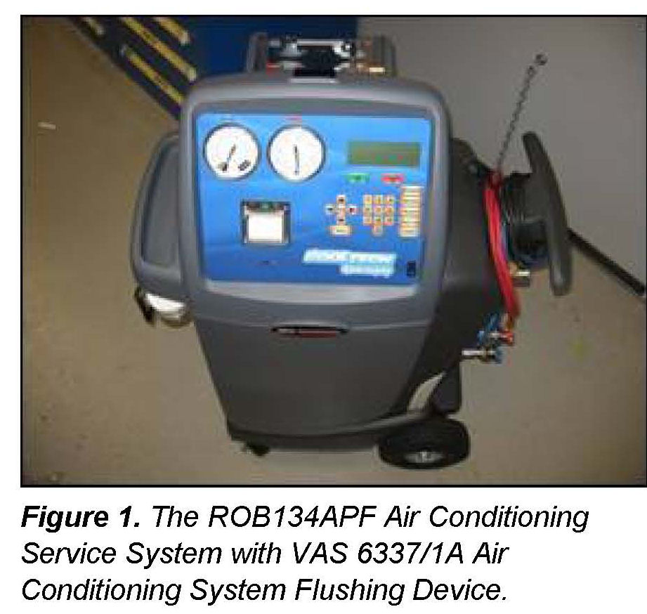
- Use the ROB134APF Air Conditioning Service System with VAS 6337/1A Air Conditioning System Flushing Device for effective refrigerant handling and air conditioning circuit flushing after air conditioning component failure.
- Now air conditioning system refrigerant recovery, evacuation, recharge and refrigerant circuit cleaning after component failure can be performed with a single servicing station.
The VAS 6338/1 Adapter Set for Refrigerant Circuits. Along with an additional adapter (VAS 6338/33 for the front expansion valve bypass for the Touareg) this kit contains the adapters necessary to complete a thorough flush operation of a contaminated circuit.
ElsaWeb contains the technical information for each model regarding the necessary adapter applications and connections of the servicing station for the flush operation. See Heating, Ventilation & Air Conditioning >> Refrigerant R134A-Servicing >> 00 General Technical Data >> General
Information >> Refrigerant Circuit and Components >> Refrigerant Circuit, Flushing with Refrigerant R134A in ElsaWeb.
All other refrigerant recovery, evacuation and recharge operations are performed using the usual procedure specified in ElsaWeb. An operations manual will accompany each servicing station that will describe operation
of the unit.
Procedure
Front A/C
1. If an air conditioning component has been diagnosed as the root cause of the failure and this component is suspected of releasing debris through the circuit, continue the diagnosis to determine if this is the case.
2. Turn the power to the servicing station on and begin by recovering the refrigerant from the system through the normal service fittings.
Tip:
During the entire process avoid interrupting the power to the station. The station's internal memory will keep a log of all operations and can conveniently be recalled and printed. If the power is interrupted, the station will lose the memory of the process, and the oil volume recovered, oil volume added, refrigerant volume recovered, etc. will have to be manually determined.
3. Disconnect the service hoses. The VAS 6338/1 adapters will be used to bypass the following:
Note:
For models in which the Receiver-drier is not over flushed as per the repair manual, the desiccant cartridge must be removed for the flushing process.
Before flushing the A/C circuit, inspect the Receiver-drier cartridge screen for any tears and for any desiccant material that may have been released into the A/C circuit. If the Receiver-drier screen is torn, replace the condenser prior to starting the flushing procedure.
^ Compressor.
^ Receiver-drier.
^ Expansion Valve/ Restrictor (if equipped).
If vehicle is equipped with a restrictor, remove the restrictor and reconnect the line.
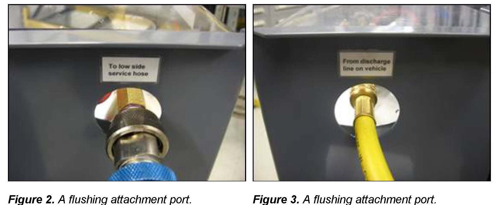
4. Once the appropriate adapters are in place, connect the service station to the vehicle through the air conditioning compressor hoses. The flushing attachment ports are labeled on the flusher.
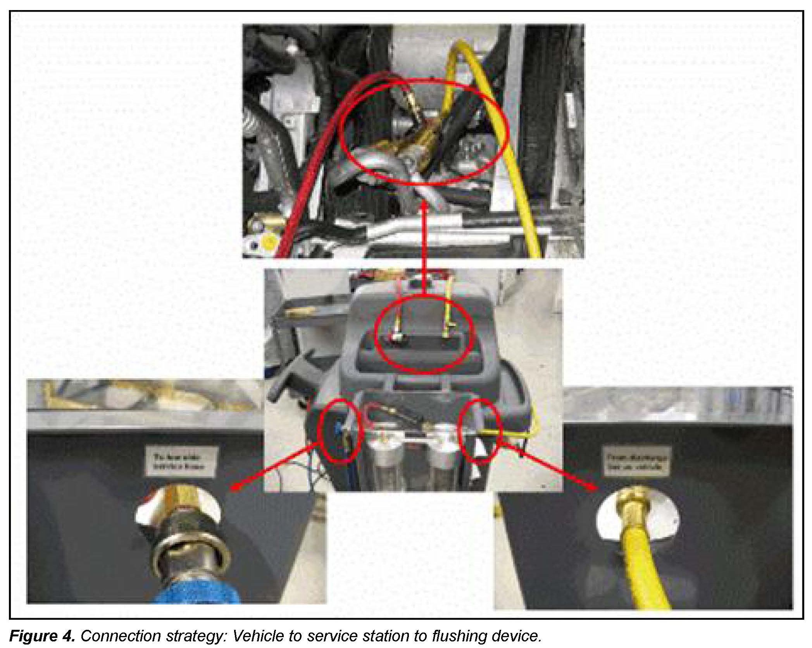
^ This connection strategy allows for a system flush in the opposite direction of the normal refrigerant flow.
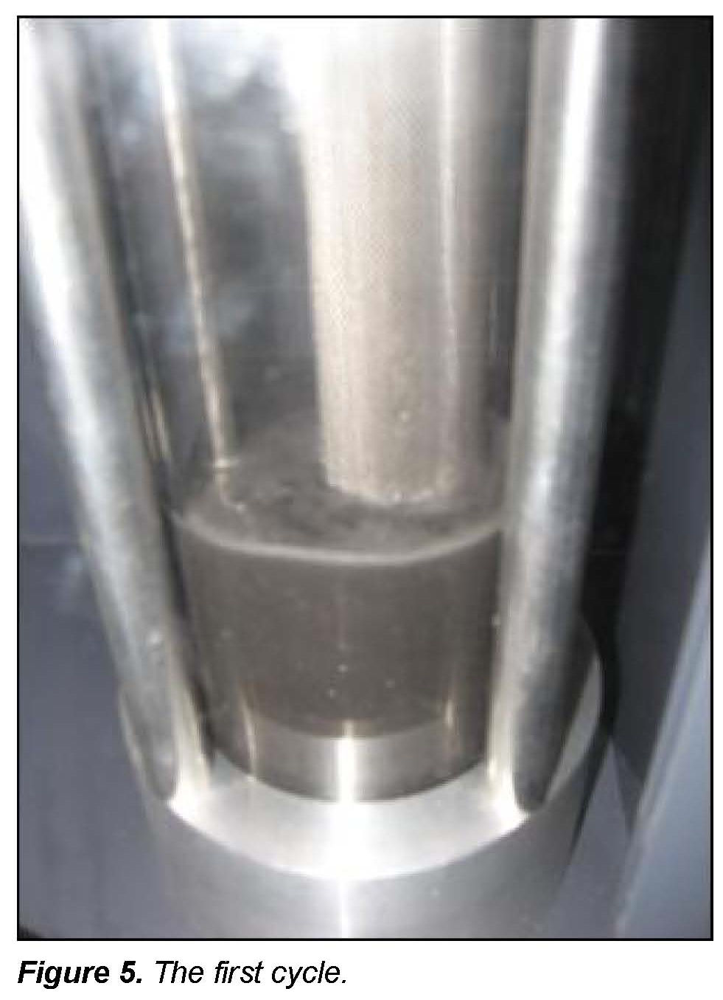
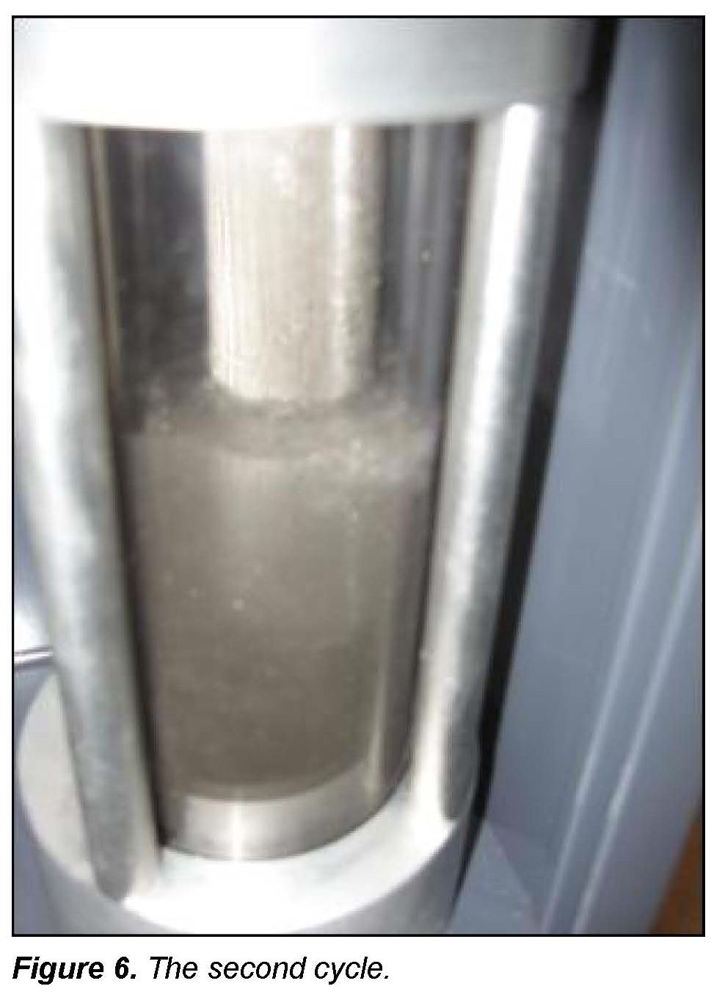
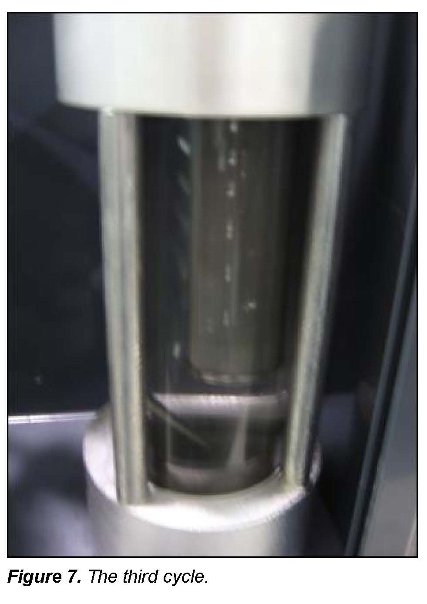
^ The flush program will begin with an evacuation of the system and a rate of rise test. This is necessary to test the integrity of the connections before the flush cycles begin. If the rate of rise test passes, the program will proceed into the flush cycles. These cycles will occur automatically in succession. See Figures 5 - 7.
^ The debris is then rinsed from the circuit and contained within the filtration in the flusher. After the flush program, the system will be evacuated.
5. After the system is evacuated, remove any adapters that were installed from the VAS 6338/1.
6. Replace Expansion Valve (if equipped), Receiver-drier and Restrictor (if equipped).
7. Connect the station in the usual manner through the service fittings and perform the normal evacuation and refrigerant recharge operations.
8. Print a log of the job and attach to the repair order.
Touareg with Four Zone Climate Control - Rear A/C
For Touareg with four zone climate control, the flush process will be repeated for the additional air conditioning unit (rear of vehicle) according to the repair information in ElsaWeb.
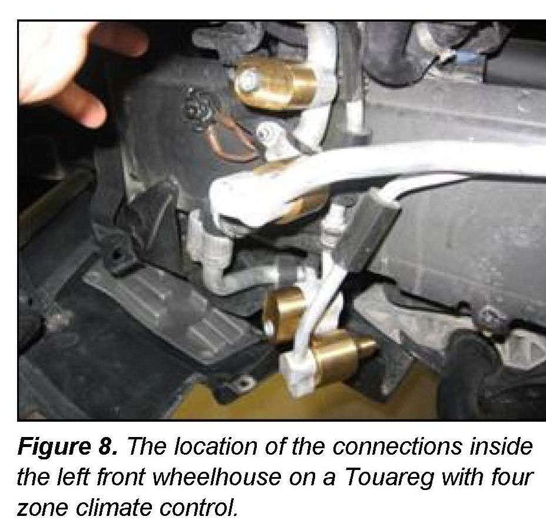
1. Separate the front and rear air conditioning systems for individual rinse operations.
The VAS 6338/1 contains the necessary adapters to separate the systems for the individual rinse operations.
2. Bypass the rear expansion valve with an adapter from the VAS 6338/1.
3. Flush rear A/C.
4. When complete, remove any adapters that were installed from the VAS 6338/1.
5. Replace defective components.
6. Connect the station in the usual manner through the service fittings and perform the normal evacuation and refrigerant recharge operations.
7. Print a log of the job and attach to the repair order.
A/C Components Replacement
The following components must be replaced:
^ Expansion Valve (if equipped)
^ Restrictor (if equipped)
^ Receiver-drier
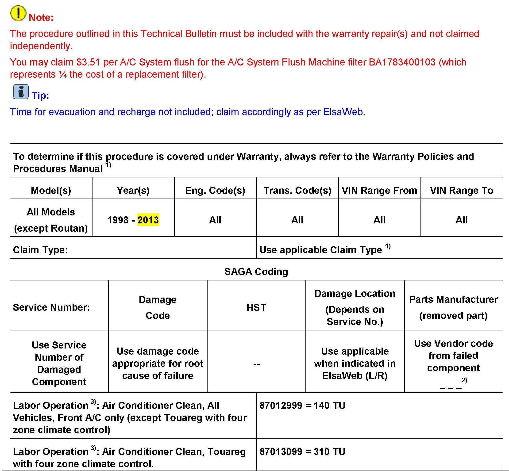
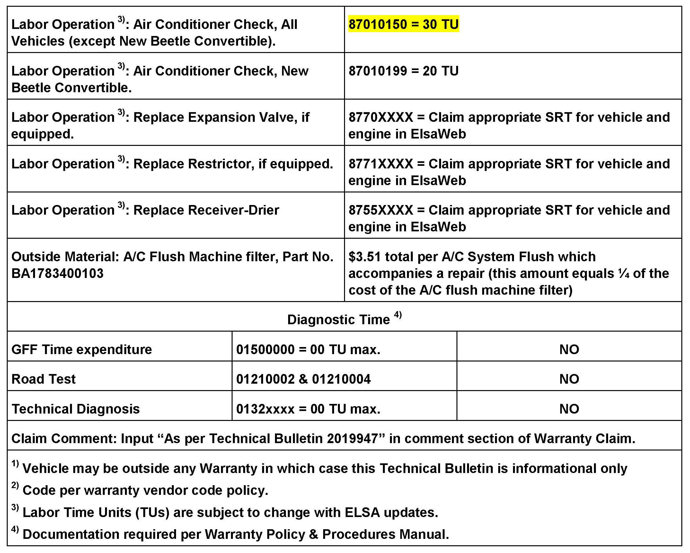
Warranty
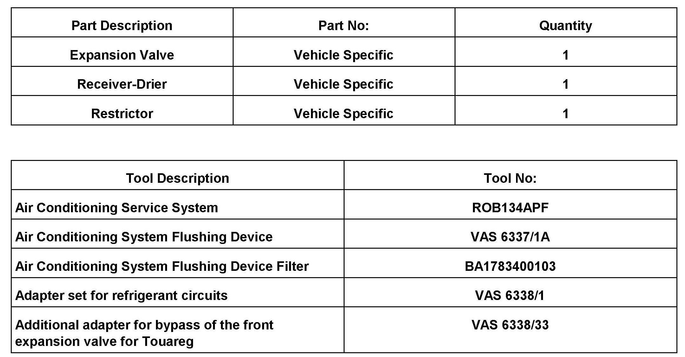
Required Parts and Tools
Additional Information
All part and service references provided in this Technical Bulletin are subject to change and/or removal.
Always check with your Parts Dept. and Repair Manuals for the latest information.